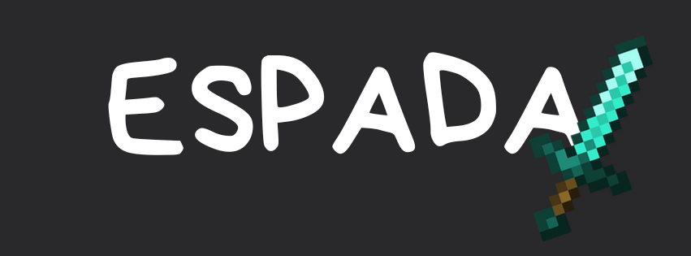

-
Aprende a hacer sprint-reset y S-tap de manera efectiva.
-
Tener un DPI bajo y una sensibilidad baja es importante para mantener la mira fija en tu oponente.
-
El PvP con espada de diamante no se trata solo de meter a tus enemigos en combos. Necesitas aprender a dar golpes críticos (crits) y a hacer jump-reset.
-
Como se mencionó antes, el jump-resetting es increíblemente útil para anular el empuje (knockback).
-
Lo más importante: el espacio (spacing) y el timing son fundamentales. El apuntado (aim) y el movimiento lateral (strafing) no sirven de nada sin estos dos elementos.
Consejos avanzados:
-
A veces te encontrarás con personas que tienen más ping que otras, lo que hará que sea un reto derrotarlas porque los combos no funcionarán. Intenta eliminarlas a base de golpes críticos (crits), ya que los combos son casi inútiles contra ellas.
-
Cambia de estilo de juego según la situación. Aunque es importante tener un estilo principal, contar con estilos de respaldo nunca viene mal; si tu oponente logra descifrar tu juego, tendrás un Plan B para derrotarlo.
-
Si estás en un intercambio de golpes críticos (p-crit trade), puedes volverte impredecible haciéndoles W-tap inmediatamente, lo que puede arruinarles la mira. También puedes hacer esto cuando tu oponente esté intentando darte críticos y tú ya le hayas conectado uno. A este último consejo se le conoce como "Sprint Hit Deflection" (Desvío de golpe con carrera).
DEPENDE DEL MATERIAL ES CUANTO DAÑO HARÁS
| Material | Madera | Oro | Piedra | Hierro | Diamante | Netherite |
|---|---|---|---|---|---|---|
| Daño de Ataque | 4 | 4 | 5 | 6 | 7 | 8 |
| Velocidad de Ataque | 1.6 | 1.6 | 1.6 | 1.6 | 1.6 | 1.6 |
| Daño por Segundo (DPS) | 6.4 | 6.4 | 8.0 | 9.6 | 11.2 | 12.8 |
| Durabilidad | 59 | 32 | 131 | 250 | 1561 | 2031 |
| Daño Total Infligido (Vida Útil) | 236 (× 118) | 128 (× 64) | 655 (× 327.5) | 1500 (× 750) | 10927 (× 5463.5) | 16248 (× 8124) |